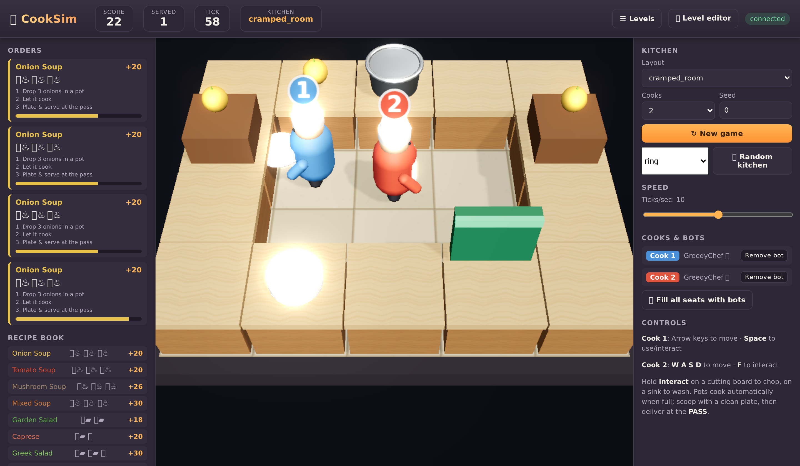
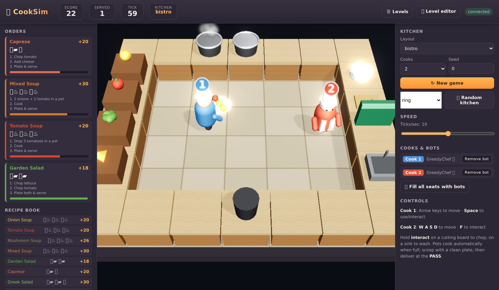
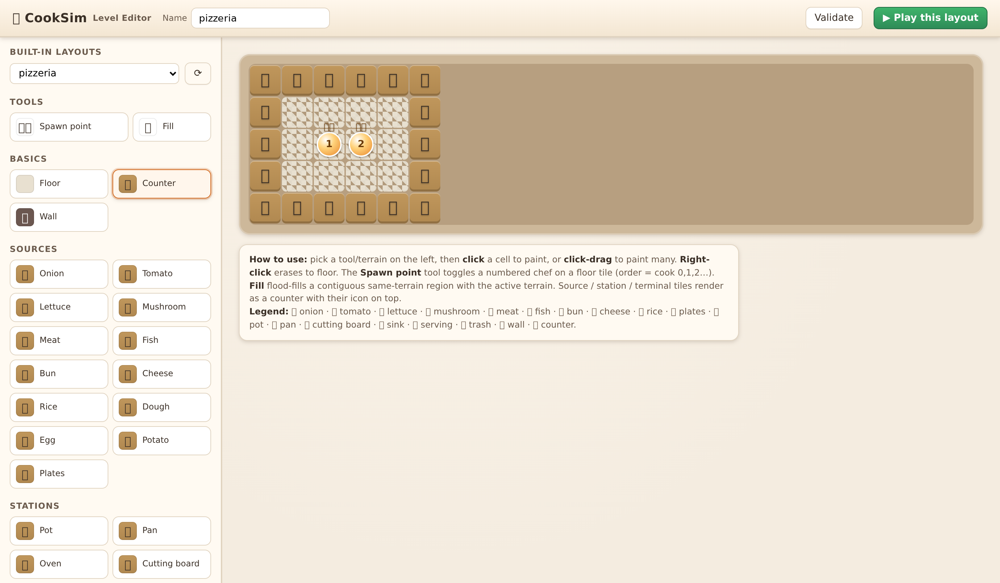
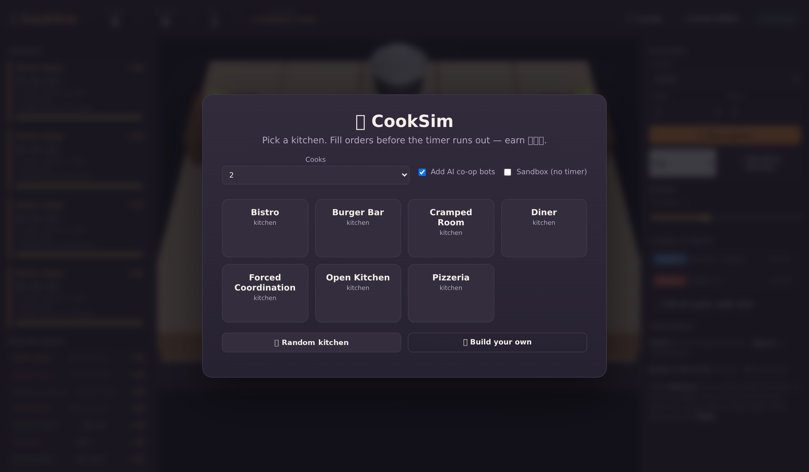
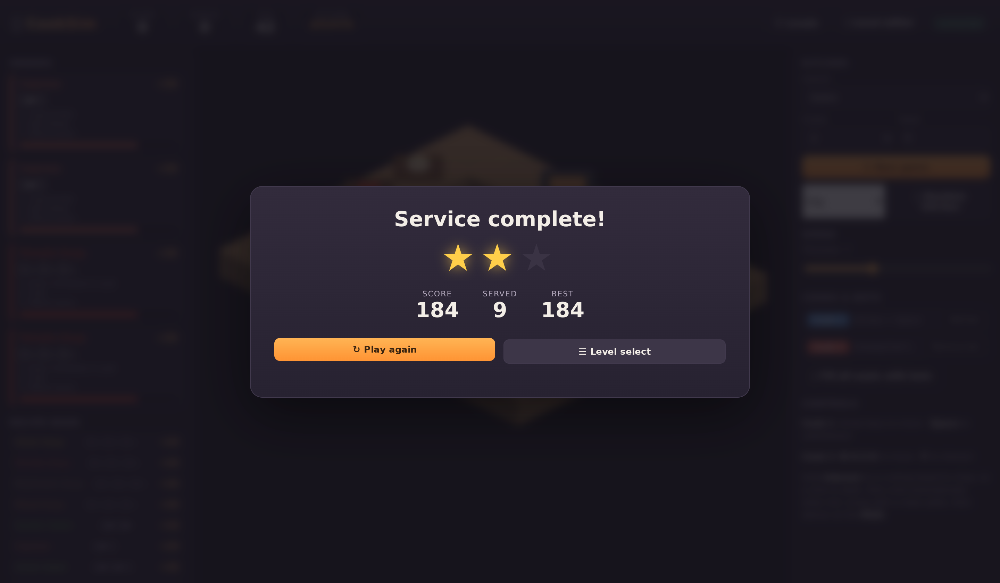

CookSim is a from-scratch cooking-game simulator — richer mechanics, a real-time 3D WebGL kitchen, a level editor, and proper reinforcement-learning environments. This page teaches you the whole thing, piece by piece.
The research community uses a small game called overcooked_ai to study how AI agents cooperate. Two cooks share a cramped kitchen and must coordinate to make soup. It's brilliant for research, but it's tiny: one recipe, a handful of tiles, and flat, basic graphics.
CookSim keeps everything that made it useful for AI — a clean, deterministic simulation you can train agents on — and makes it into a real game: many ingredients, genuine multi-step cooking, timed customer orders, a kitchen you can design yourself, and a renderer that actually looks like a kitchen.
| Feature | overcooked_ai | CookSim |
|---|---|---|
| Recipes | 1 (onion soup) | 19 — soups, salads, burgers, sushi, pizza, fried dishes… |
| Ingredients | onion, tomato, dish | 12 ingredients with raw / chopped / cooked / burnt states |
| Stations | pot, dispenser, serving | pot, pan, oven, cutting board, sink, dispensers, serving, trash |
| Mechanics | cook & deliver | cook, burn, chop, wash dishes, timed orders, multi-step assembly |
| Maps | fixed text layouts | text layouts + procedural generation + a visual editor |
| Graphics | flat 2D tiles | Real-time 3D (WebGL/Three.js): shadows, reflections, bloom, particles |
| RL API | custom | standard Gymnasium & PettingZoo (passes the conformance test) |
INTERACT) applied in different places. That one idea makes the whole game simple to simulate
and simple for an AI to learn.
None of this is staged. Below are unedited screen recordings of the built-in AI chef (one cook) playing the real game. Each clip shows a complete multi-step dish — gather, prep, cook, assemble — ending in a delivery at the pass (watch the score climb and the sparkle fire). The order tickets on the left are pinned to one recipe so you can follow the whole pipeline.
And here are entire rounds on the timer: the cook completes a stream of dishes and, when orders pile up faster than one person can cook, misses a few — exactly the pressure the game (and the RL task) is about.
Every kitchen is a rectangular grid. Each cell is either walkable floor or an impassable feature you use from an adjacent floor tile. Features come in three families:
Layouts are just text. This compact grammar (one character per tile) is how a kitchen is stored, and it's exactly what the level editor reads and writes:
# the classic "cramped room" — onions, one pot, plates, a pass XXPXX X = counter P = pot D = plates O O O = onion source X1 2X 1,2 = where the two cooks spawn XDXSX S = serving window


This is the heart of "diverse, multi-step tasks." A dish isn't one action — it's a chain of prep steps that often have to happen in the right order, sometimes in parallel. Here's the deluxe burger:
An ingredient has a state: raw → chopped (on a board) or → cooked (in a pot, pan, or oven). Leave it on the heat too long and it burns — now it's worthless and you must bin it. A plate is the workspace: you ladle cooked food onto it, drop chopped pieces on it, add raw items, and when the contents exactly match a recipe, the pass accepts it.
The full menu spans every prep type:
Customers order from this menu on a timer. Each order ticket shows the recipe and its steps, and a bar counts down — fill it in time for the reward, or eat a penalty when it expires.
The whole world advances in discrete ticks. Each tick, every cook submits one action, and the engine resolves them in a fixed order so the result is always deterministic:
INTERACT affects the tile it faces — pick up, put down, add to a pot,
chop, wash, or serve. The same action, context-dependent.Driving the simulator directly is just a loop:
from cooksim import KitchenGame, load_layout from cooksim.agents import GreedyChef game = KitchenGame(load_layout("pizzeria"), seed=0) bots = [GreedyChef(i) for i in range(game.n_players)] while not game.done: actions = [bot(game, i) for i, bot in enumerate(bots)] game.step(actions) # advance one tick print(game.score, dict(game.stats)) # e.g. 1086.3 {'deliveries': 49}
Because the engine is clean and deterministic, it makes an excellent training ground for AI. CookSim ships two standard interfaces researchers already use:
CookSimParallelEnv) — every cook is an agent acting at once. This is the canonical multi-agent,
fully-cooperative setting.CookSim-v0) — control one cook against a fixed partner, the classic single-agent setup.from cooksim.envs import CookSimParallelEnv env = CookSimParallelEnv(layout="open_kitchen", reward_mode="shared") obs, info = env.reset(seed=0) while env.agents: actions = {a: env.action_space(a).sample() for a in env.agents} obs, rewards, term, trunc, info = env.step(actions)
What does an agent actually see? Not pixels — a compact stack of feature planes laid over the grid: where I am, where my teammates are, what's on every counter, how full and how cooked each pot is, plus the order queue and the clock. It's everything you'd need to reason about the kitchen, in a form a neural network can read.
This is where CookSim leaves the original far behind. The kitchen is a genuine 3D scene, rendered live in your browser with WebGL via Three.js. Counters and walls are real extruded geometry, chefs are 3D characters, and the food are little 3D models — all lit by a virtual studio:
Remarkably, there are still no downloaded art assets. Every pot, onion, chef and tile is built from primitive shapes and procedural textures in code — so the whole game is self-contained, yet looks like a real kitchen from any angle.
So you're never cooking alone, CookSim includes a hand-written "GreedyChef." It's not a trained network — it's a small, readable decision-maker that plans like a person would:
Navigation is a breadth-first search across floor tiles to the nearest spot beside the target station; a small anti-stuck rule breaks the rare deadlock when two cooks want the same tile.
You don't have to write that tile-grammar by hand. The browser editor lets you paint a kitchen, drop in spawn points, resize the grid, and validate that it's actually playable (it checks you have a pass, plates, and ingredient sources). It can also procedurally generate a fresh kitchen, and import/export layouts as JSON.

Hit ▶ Play this layout and your kitchen loads straight into the game — handed off through the browser's local storage, no save files required.
CookSim wraps all of this in an actual game: a level-select screen, a co-op mode (two cooks on one keyboard, or fill empty seats with bots), a countdown round, and a star rating when service ends.


Controls. Cook 1: arrow keys to move, Space to use. Cook 2: WASD + F. Hold interact on a board to chop, on a sink to wash. Pots cook automatically when full — scoop with a clean plate, then deliver at the pass.
# create the environment and install conda env create -f environment.yml conda activate cooksim # launch the game + editor server, then open http://127.0.0.1:8000 cooksim-server # or just use the simulator for AI research python examples/greedy_demo.py pytest -q # 20 tests: mechanics, RL conformance, determinism
CookSim is one clean idea — a grid where a single interact action does everything — scaled into a complete game:
Every screenshot on this page is the real thing, captured straight from the running app.